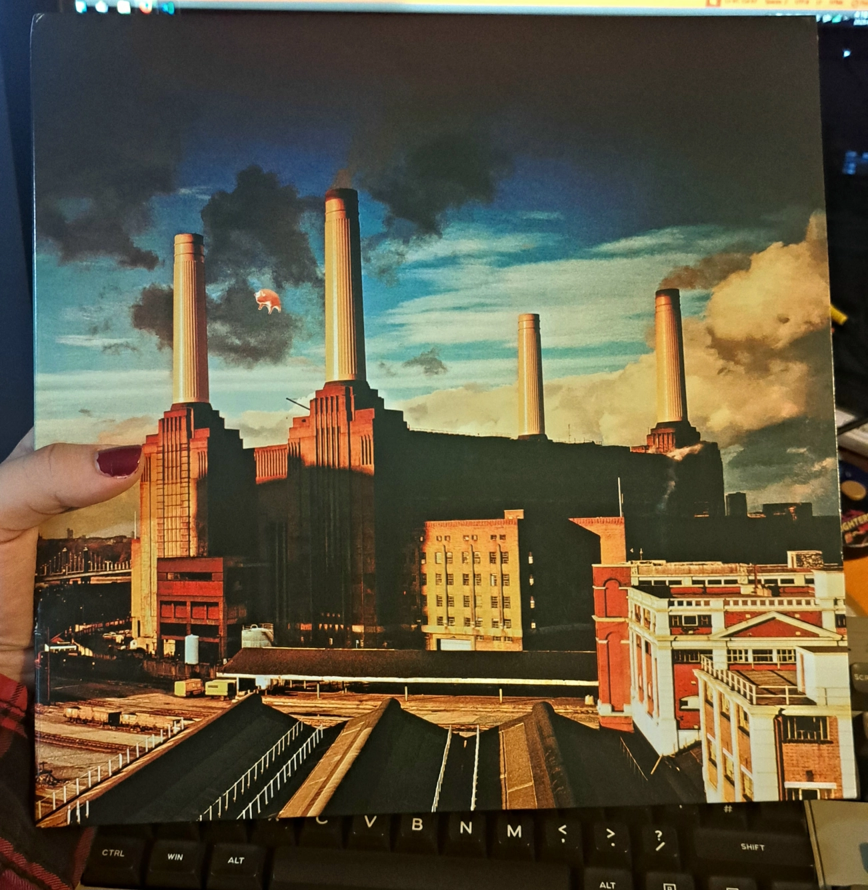

Animals
Pink Floyd
Produced by: Bob Ezrin, David Gilmour, James Guthrie and Roger Waters
Released on: 21 January 1977


The legendary cover art featuring a giant pig balloon flying over Battersea Power Station in London.
Animals
Pink Floyd
Produced by: Bob Ezrin, David Gilmour, James Guthrie and Roger Waters
Released on: 21 January 1977
LP 1, Side 1
1.
Pigs on the Wing (Part 1)
01:24

2.
Dogs
17:04
LP 1, Side 2
3.
Pigs (Three different ones)
11:28
4.
Sheep
10:20
5.
Pigs on the Wing (Part 2)
01:24
Big man, Pig man~, Haha charade you are~!
Pink Floyd's Animals is a commentary and critique of the classes of society, loosely being based on George Orwell's Animal Farm from 1945. It was Pink Floyd's tenth studio album and was first released on 21 January 1977.
The Album explores three different societal classes:
The Pigs, who are the typical rich CEOs and corrupt politicians,
The Dogs, who act as the executive forces and the businessmen in society,
and lastly the Sheep, the lowest ranking class who are just trying to make ends meet.
Animals is one hell of a journey ! While at first glance, this album may not feature much in quantity, where this album ABSOLUTELY delivers is in its quality !
Each song has it's very own unique characteristics, especially the abstract lyrics of Pigs with the famous "Haha, charade you are" or the legendary outro of Sheep featuring the amazing guitar solo by David Gilmour !
I'd recommend taking your time listening to this album. Don't get me wrong this album is amazing to have running in the background while doing something else, however when you really take your time and listen to it, the songs just hit differently, ya'know?